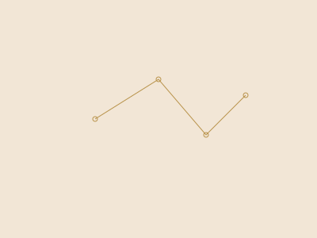
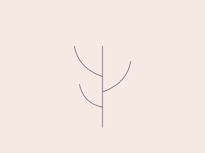
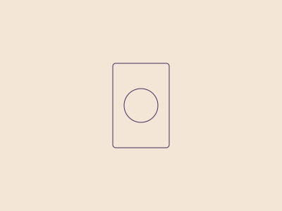

Blog
Notas breves para pensar en voz alta: astrología, herbolaria y tarot leídos como lenguajes simbólicos.
Artículos recientes

3 de julio de 2026
La carta natal como mapa, no como pronóstico
Por qué leer una carta natal se parece más a interpretar un texto que a predecir un futuro.

20 de junio de 2026
Herbolaria como saber heredado
Sobre la diferencia entre estudiar una tradición y prometer un efecto: cómo abordamos la herbolaria en esta práctica.

5 de junio de 2026
El tarot como umbral, no como respuesta
Qué significa usar el tarot como imagen para pensar, en vez de usarlo para obtener una respuesta cerrada.